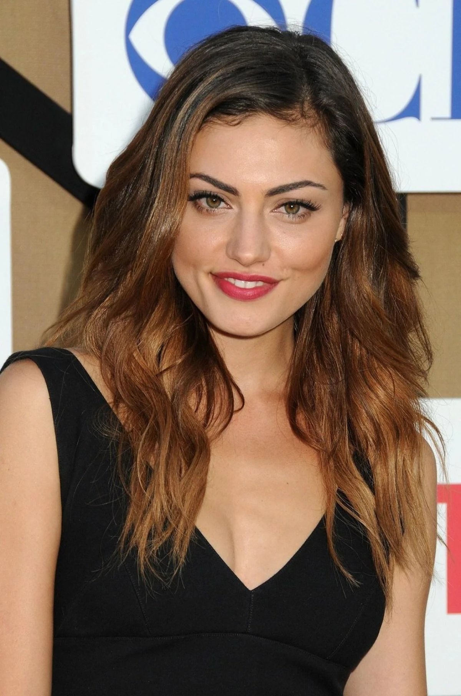

Phoebe Tonkin

Steckbrief
- Name: Phoebe Jane Tonkin
- Geburtsdatum: 12. Juli 1989
- Geburtsort: Sydney, New South Wales, Australien
- Nationalität: Australisch
- Beruf: Schauspielerin & Model
- Größe: ca. 1,78 m
Bekannte Serien
- H2O – Plötzlich Meerjungfrau (2006–2010) – Cleo Sertori
- The Secret Circle (2011–2012) – Faye Chamberlain
- The Vampire Diaries (2012–2013) – Hayley Marshall
- The Originals (2013–2018) – Hayley Marshall-Kenner
- Bloom (2019–2020)
Bekannte Filme
- Tomorrow, When the War Began (2010)
- Bait 3D – Haie im Supermarkt (2012)
- Babylon (2022)
- Transfusion (2023)
- Night Shift (2023)
Karriere
Phoebe Tonkin wurde durch die Serie H2O international bekannt.
Ihren Durchbruch in den USA hatte sie mit The Vampire Diaries und besonders mit dem Spin-off The Originals,
wo sie eine der Hauptrollen spielte.
Interessen
Yoga, Mode, Fotografie, Reisen, Tierschutz